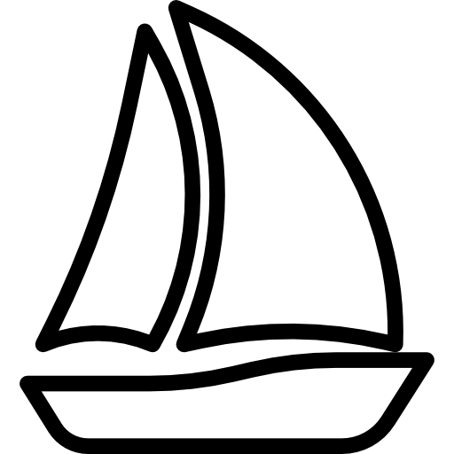

Kluby sportowe w Poznaniu
Mapa prezentuje kluby sportowe zlokalizowane na terenie miasta Poznania
podzielone wg. dyscyplin na osiem kategorii(klas):

- kluby grające na różnych szczeblach
polskich lig piłkarskich
Poznań może pochwalić się
aż dwoma zespołami grającymi w Ekstraklasie
Źródło informacji
kluby piłki ręcznej
- popularny szczypiorniak, który jest
licznie reprezentowany w Poznaniu
przez wiele klubów
Źródło informacji
kluby sztuk walki
- kluby oferujące zajęcia dla członków oraz biorące udział
w różnych zawodach. Zarówno karate, jak i inne np. krav maga
Źródło informacji
kluby jeździeckie
- zarówno oferujące zajęcia
jak i biorące udział w zawodach
Źródło informacji
kluby strzeleckie
- z broni palnej oraz łucznictwo.
Biorące udział w zawodach
Źródło informacji

- zarówno akademickie kluby sportowe
jak i kluby biorące udział w rozgrywkach ligowych
Źródło informacji

kluby żeglarskie- profesjonalne oraz półprofesjonalne kluby
dla zawodowców oraz miłośników tego sportu
Źródło informacji
kluby koszykarskie
- kluby biorące udział w rozgrywkach ligowych
oraz kluby akademickie
Źródło informacji
© by Michał Czech & Szymon Wiśniewski | Icons from Flaticon